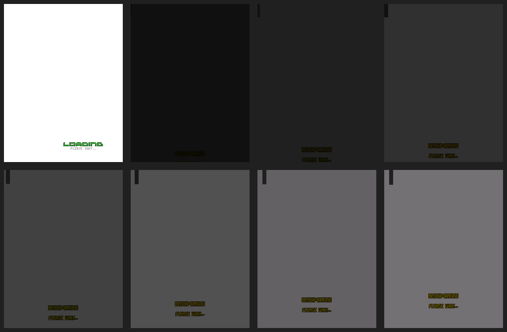
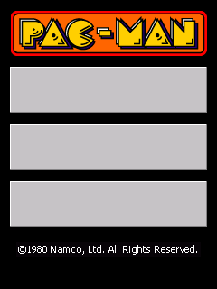
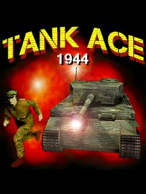

Rendering + audio proof
Asphalt 4: Elite Racing
WVGA rendering reaches gameplay with a captured PCM audio track.
View proof ↗These entries link to reproducible proof checked into the PocketHLE repository. A title-screen boot is not called full playability, and a capture is not a promise for every device.
WVGA rendering reaches gameplay with a captured PCM audio track.
View proof ↗
Boots through the software OpenGL ES layer to the title screen.
View proof ↗
The Motorola Q9 run covers continuous rendering and submitted audio.
View proof ↗
The original ARM Windows Mobile target reaches an in-game scene.
View proof ↗The Windows Mobile build produces a non-black gameplay scene.
View proof ↗
Checked-in captures show frame progression through loading and gameplay.
View proof ↗
Native ARM Windows Mobile rendering proof with an emulator-side gameplay capture.
View proof ↗
Use a legally obtained game, record the version and frontend, and attach the frame or log that proves the result.
Submit a report ↗